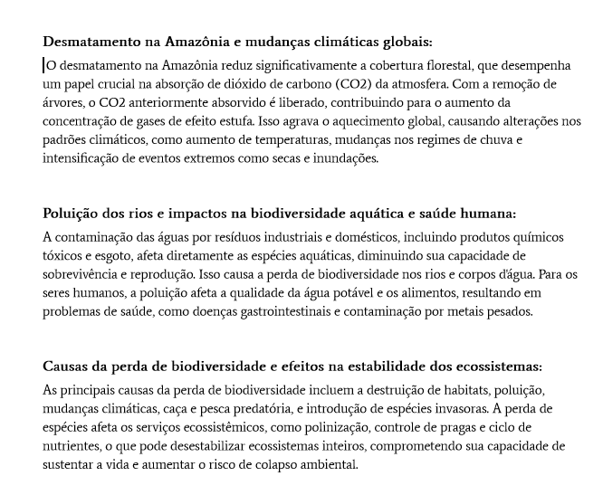
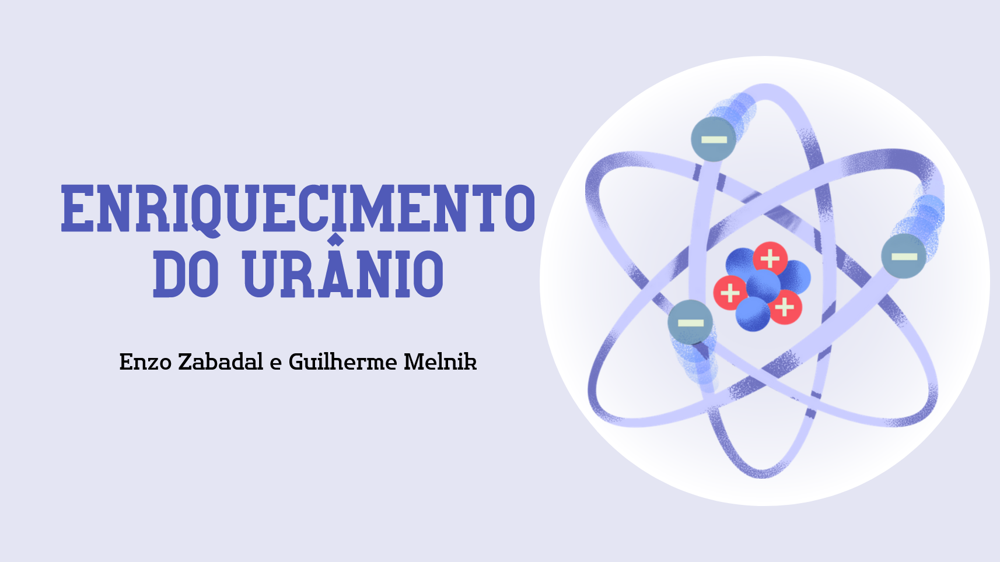
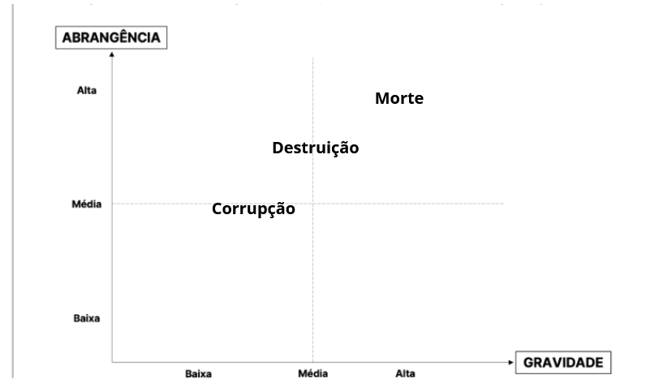

1°Trimestre
Corrente elétrica

Em Duplas nós deviamos criar uma HQ (história em quadrinhos), para ilustrar a pesquisa realizada.
Habilidades: C2, H6.
Link HQLink Atividade
Passo 1 - Criação de um meme sobre evolucionismo. Anexar na forma de imagem.
Passo 2 - Resultados e respostas da "seleção natural" feita por você no simulador. Coloque as respostas em um DOCS.
Habilidades: C2, H11.
Link AtividadeO objetivo desta atividade prática é permitir que os alunos compreendam e experimentem as diferenças entre circuitos de resistores em série e em paralelo, explorando como a resistência total é afetada em cada configuração.
Habilidades: C2, H6, C6, H34.
Link AtividadeCriar uma apresentação dos Tópicos: Carbono, Petróleo, Hidrocarbonetos, Representações, Classificação Carbono, Ligação Sigma e Pi.
Atividade em Duplas
Habilidades: C1, H3, H4, H5.
Link Atividade
Em Duplas nós deviamos criar uma HQ (história em quadrinhos), para ilustrar a pesquisa realizada.
Habilidades: C2, H6.
Link HQObjetivo:
Nosso objetivo nessa atividade era fazer uma apresentação sobre as diversas relações ecológicas entre os animais.
Habilidades: C3, H15, H18.
Link AtividadeObjetivo:
O objetivo desta atividade prática é permitir que os alunos compreendam e experimentem as diferenças entre circuitos de resistores em série e em paralelo, explorando como a resistência total é afetada em cada configuração.
Habilidades: C6, H35.
Link AtividadeObjetivo:
Criar um cartaz com o objetivo de incentivar a diminuição do uso de plásticos e fazer um questionamento sobre o uso de polimeros em um formato de documento.
Habilidades: C3, H15, H18.
Link CartazObjetivo:
Responder um Relatório sobre a Lei de Faraday enviado pela professora.
Habilidades: C6, H36.
Atividade Beux
Objetivo:
Montar em dupla uma apresentação sobre o ENRIQUECIMENTO DO URÂNIO de modo que possamos ver:
Etapas do processo, Países que dominam a tecnologia, Utilização em Usinas Nucleares, O caso Brasil, Controles Mundiais e Curiosidades.
Habilidades: C5, H27 e H28.
Link AtividadeAtividade Romuel
Objetivo:
formar grupos
definir o tema para cada grupo
pesquisar sobre o tema
criar apresentação
Habilidades: C5 e H24, H25, H26, H27 e H28.
Link AtividadeAtividade Tai
Passo 1 - Criação de um meme sobre evolucionismo. Anexar na forma de imagem.
Passo 2 - Resultados e respostas da "seleção natural" feita por você no simulador. Coloque as respostas em um DOCS.
Habilidades: C2, H11.
Link AtividadeObjetivo: Pesquisar o conceito de decaimento radioativo,
explorar suas aplicações práticas e apresentar os resultados,
destacando a importância do fenômeno em diferentes áreas.
Habilidades: C5 e H24, H25, H26, H27 e H28.
Link Atividade